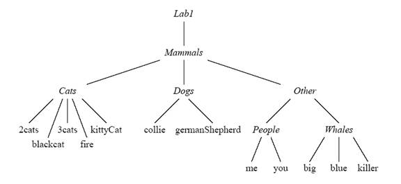
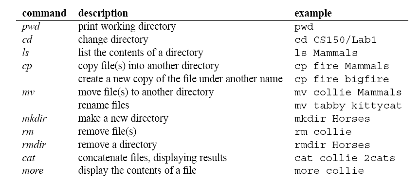
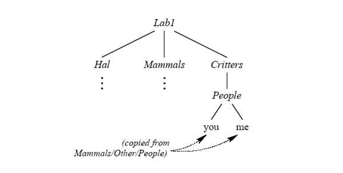

In this part, you will be creating new files and directories and adding them to the Mammals file hierarchy in your Lab01 directory. Here is a drawing of the directory hierarchy you will be starting with:

To start, make sure that you have a terminal window open. Everything you do in this section will be done from that window. You should also open a new text file in a text editor—you can choose New from the File menu in DrJava or open a new file in gedit. Save the file now (and often as you work) as “<your last name><your first name>Lab01Report.txt”. (For example, Juanita Doe would name the file “DoeJuanitaLab01Report.txt”.
For your reference, the table below summarizes all the Linux commands we will use in this lab assignment. Don't try to execute any of the example instructions in the figure as some are irreversible and may mess up your files; just look through them before continuing. Refer back to the pre-lab write-up for detailed information on the Linux commands you need to complete this exercise.

Complete each of the following exercises using the terminal window. As you complete each exercises, copy the contents of the terminal window for that part into your lab report file. You might use directory windows to help visualize the effects of your commands. In order to see the changes, however, you may need to click the refresh button (circular arrows) after doing the command. Again, you should be using the command line for all actions.
If at any time you do not see the files and directories you expected to see, stop and figure out where you have gone wrong—it could be you've entered the wrong commands, or it could just as well be that your expectations were off. As you complete each command, you need to understand what it does. If you need help, remember to ask a TA or a professor.

Complete your report for Part 1 and save it one last time. Verify that the name of this file begins with your last name and first name. Show your report to the instructor or TA before you go on to Part 2.
Open a terminal window if you don't already have one.
If necessary, change the current working directory to
CS160/Lab01.
Verify that you have a file named MouseIndicator.class
in the directory;
if not, you can copy it from the directory
/usr/people/classes/CS160/labs/Lab01
into the current directory, using “.” as the
second argument to cp.
We'll run this program from the terminal instead of from inside DrJava.
Type java MouseIndicator at the prompt.
Press and release the mouse a few times in the window that pops up.
Notice what this program does:
when you press the mouse button in the window, the word “up”
becomes black and the word “down” becomes red;
when you release the mouse button, the “up” becomes red
and the “down” becomes black.
You are given in incomplete version of this program that you are to complete so that it works just like the original. Your assignment here is to complete a program that works in this way. Open the file MyMouseIndicator.java in DrJava and add appropriate statements to make it work as specified. Your instructor will give you information about the statements you need to use either in the class before the lab or in the lab itself.
If you don't finish during the lab time and need help completing this assignment, there are TAs available every evening except Friday and Saturday in Peter Engel Room 212 (this lab) and in the Clemens Library at St Ben's. Check the TA website https://sharepoint.csbsju.edu/computerscience/Pages/labhours.aspx for hours.
Show your completed program to the instructor or TA before you leave today's lab or at the beginning of the next lab to receive full credit.